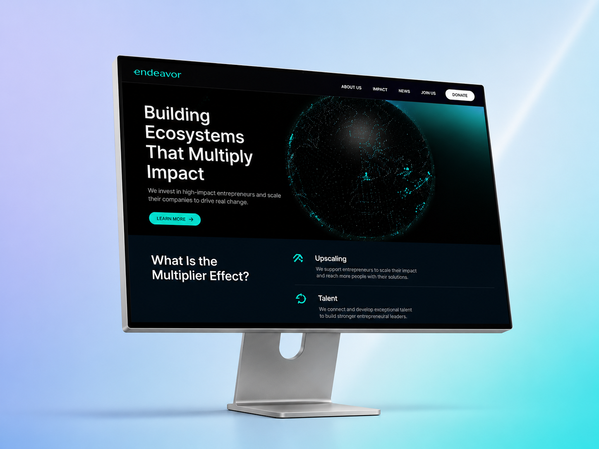
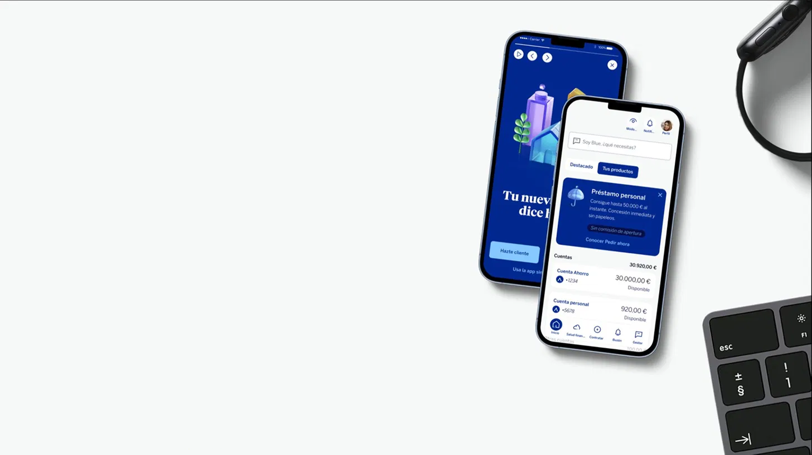
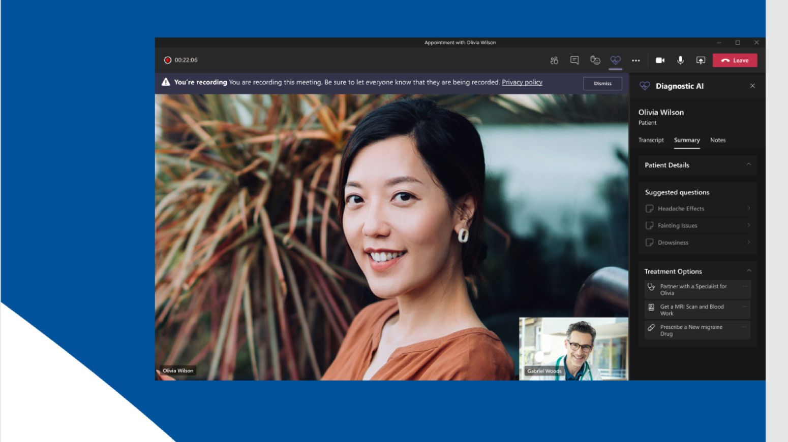
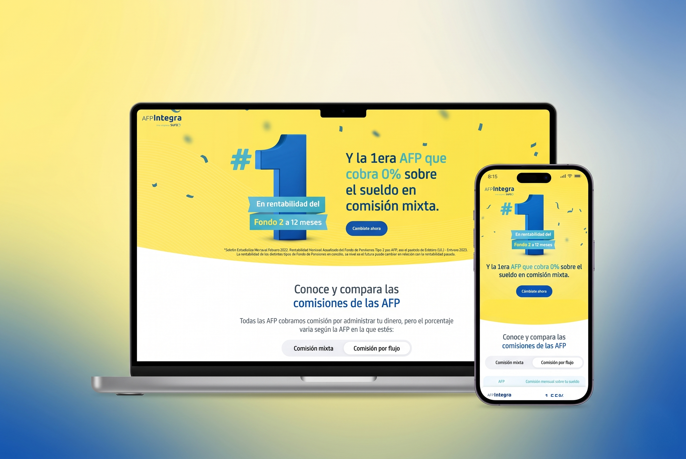
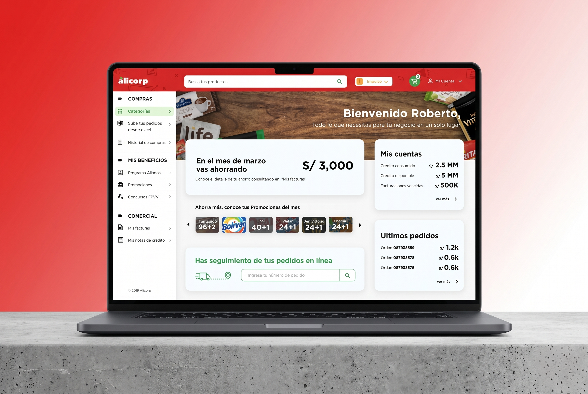

I'm a Psychologist turned Product Designer. I combine deep user research with strategic design thinking to build digital products that truly make sense — for people and for business.
See my workFrom research to final design — real problems, real outcomes.

Redesigned the platform experience of a global entrepreneurship network — from a fragmented ecosystem to a coherent, research-led narrative connecting founders, institutions, and researchers worldwide.

An in-depth research study exploring how trust is built — and broken — in digital banking experiences. Combines behavioral psychology with UX research methodologies to map user decision-making patterns.

Designed a telemedicine platform for a Microsoft-backed initiative, bridging the gap between patients and physicians through an intuitive digital experience — from user personas to final UI.

Led a human-centered design process to redesign Peru's largest pension fund digital experience. Conducted contextual interviews and usability testing to uncover pain points in retirement management.

Designed a sales management portal for Alicorp's B2B clients — one of Latin America's largest FMCG companies. Focus on simplifying complex order flows for distributors and sales reps.
I started my career as a psychologist, which gave me a deep understanding of human behavior, mental models, and how people make decisions. That foundation became the core of how I approach design.
Over the past 7+ years I've worked across healthcare, fintech, education, and FMCG — designing digital products that balance user needs with business goals. I've collaborated with companies like Microsoft and Globant, working in multidisciplinary teams as both a researcher and a product designer.
Today I'm focused on hybrid product roles — places where research rigor and design craft live together, and where insights actually shape what gets built.
Every project is different, but my approach is always human-centered and evidence-based.
I'm looking for hybrid product roles where research and design live together. If that sounds like your team, I'd love to connect.
Say hello